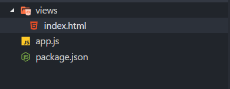
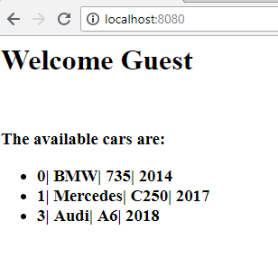
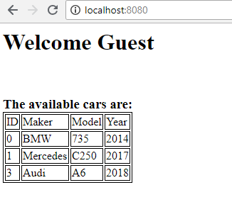
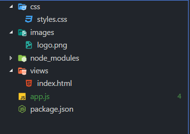
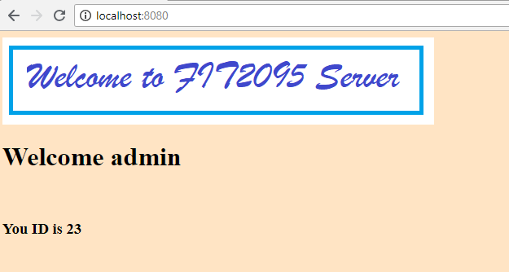

Express.js Settings
In order to apply configurations on an Express.js app, we have to use app.set to define a value and use app.get to retrieve the value based on the key/name of the setting.
Port Number
To set the port number in an Express app:
app.set('port',8080);
where 'port' is the key and 8080 is the value (port number)
Now, to retrieve:
app.listen(app.get('port'));
Application-wide Variable
We can also use app.set() to expose variables to templates application-wide.
app.set('appName', 'FIT2095 App');
Working with Middleware
Third-party middleware
Third-party middleware functions can be used to add functionality to Express apps. Think about middleware as a function that has access to Request and Response objects and gets invoked by Express to do some tasks.  For a partial list of third-party middleware functions that are commonly used with Express, see https://expressjs.com/en/resources/middleware.html
In this section, we will cover 'morgan' middleware functions.
Morgan is an HTTP request logger middleware for node.js. It generates logs automatically to any request being made. It has a set of predefined formats such as tiny, short, common, etc.
To access the full list of the predefined formats, click here:Â https://github.com/expressjs/morgan#predefined-formats
Try this example:
server.js
let express = require('express');
let morgan = require('morgan');
let app = express();
app.use(morgan('tiny'));
app.get('/', function (req, res) {
res.send('Hello from FIT2095 server!')
});
app.listen(8080);
to run:
npm init
npm install express
npm install morgan
node server.js
the expected output for the 'tiny' format:
GET / 304 - - 2.783 ms
GET / 304 - - 0.553 ms
GET /login 404 144 - 2.348 ms
GET /logout 404 145 - 0.812 ms
output for the 'short' format:
::1 - GET / HTTP/1.1 304 - - 2.801 ms::1 - GET /login HTTP/1.1 404 144 - 3.681 ms
::1 - GET /logout HTTP/1.1 404 145 - 0.620 ms
output for the 'common' format
::1 - - [10/Aug/2019:07:45:53 +0000] "GET / HTTP/1.1" 304 -
::1 - - [10/Aug/2019:07:45:58 +0000] "GET /login HTTP/1.1" 404 144
::1 - - [10/Aug/2019:07:46:01 +0000] "GET /logout HTTP/1.1" 404 145
Application-level middleware
It is possible to intercept all incoming requests and apply some pre-processing by using middleware functions which can be added through app.use().
In the following example, the express app intercepts all the incoming requests and add the current timestamp.
let express = require("express");
let app = express();
app.use(function (req, res, next) {
req.timestamp = new Date().toISOString();
next();
});
The next() function represents the next middleware function to be executed. If you choose not to call function next(), the request will be left hanging.
POST Requests
Parse incoming request bodies in a middleware before your handlers, available under the req.body property.
Develop a web app that its homepage sends data through a POST request to a server that uses Express.js as a framework. The server has to print out the received data and reply with 'Thank you'
index.html
<html>
<body>
<form action="/data" method="POST">
User Name:
<input type="text" name="username" /> </br>
User Age:
<input type="number" name="userage" /> </br>
<button>Submit</button>
</form>
</body>
</html>
server.js
let express = require('express');
let app = express();
// parse application/x-www-form-urlencoded
app.use(express.urlencoded({extended: true}));
// parse application/json
app.use(express.json())
app.get('/', function (req, res) {
res.sendFile(__dirname + '/index.html');
});
app.post('/data', function (req, res) {
console.log(req.body.username);
console.log(req.body.userage);
res.send('Thank You')
})
app.listen(8080);
to run:
npm init
npm install express
node server.js
Again:
- GET request is used to get data from the server such as html files. Express.js handles GET requests by using app.get (lines 14-16).
- POST request is used to send data from the client to the server such as username and passwoord fields. Express.js handles POST requests by using app.post (lines 17-22)
NOTE: The server listens to two requests:
- GET request that comes with pathname='/'
- POST request that comes with pathname='/data
The body parser middleware parses the data and makes it available under req.body property.
Webpage Rendering
A rendering engine enables you to use static files in your application. At runtime, the engine replaces variables in a template file with actual values, and transforms the template into an HTML file sent to the client. This approach makes it easier to design a dynamic HTML page.
The most popular view engine is called 'EJS' (Embedded JavaScript).
EJS is a simple templating language that lets you generate HTML markup with plain JavaScript. No religiousness about how to organize things. No reinvention of iteration and control-flow. It's just plain JavaScript.
To add the EJS engine to your app, you need to npm it first:
npm install ejs
Secondly, you have to configure the Express app to handle the engine:
app.engine('html', require('ejs').renderFile);
app.set('view engine', 'html');
Now, each time you need to send an HTML file to a client, use res.render() method. It renders a view and sends the rendered HTML string to the client. It has two optional parameters:
- locals, an object whose properties define local variables for the view.
- callback, a callback function. If provided, the method returns both the possible error and rendered string but does not perform an automated response. When an error occurs, the method invokes next(err) internally.
On the HTML side (template), we have to use <%= %> tags to print out the value of the attribute.
Let's take an example:
Develop a Node.js server that passes to the homepage a string and a random number that represent a name and an ID respectively.
server.js
let express = require('express');
let app = express();
app.engine('html', require('ejs').renderFile);
app.set('view engine', 'html');
app.get('/', function (req, res) {
let randomId = Math.round(Math.random() * 100);
res.render('index.html', { username: "admin",id: randomId});
});
app.listen(8080);
index.html
<html>
<body>
<h1> Welcome <%= username%> </h1>
</br>
<h3>You ID is<%= id%> </h3>
</body>
</html>
to run:
npm init
npm install express
npm install ejs
node server.js
IMPORTANT: by default, res.render needs the HTML files to be in a directory called 'views'. Therefore, the project structure should be:

Notes:
- Line 8 invokes res.render with two parameters. The first one is the HTML file name. The second parameter is an object that contains two properties username and id. The view engine (EJS) substitutes  <%= username%> and  <%= id%> with "admin" and the random number respectively. Then, res.render sends the rendered HTML to the client.
Let's have another example:
Develop a web app that its server sends an array of objects to the client's HTML page. The page has to display all the objects in an unordered list. Each Object contains car ID, car maker, car model, and car year.
server.js
let express = require('express');
let app = express();
app.engine('html', require('ejs').renderFile);
app.set('view engine', 'html');
let db = [];
db.push({
carId: 0,
carMake: 'BMW',
carModel: '735',
carYear: 2014
});
db.push({
carId: 1,
carMake: 'Mercedes',
carModel: 'C250',
carYear: 2017
});
db.push({
carId: 3,
carMake: 'Audi',
carModel: 'A6',
carYear: 2019
});
app.get('/', function (req, res) {
res.render('index.html', {username: "Guest", carDb: db});
});
app.listen(8080);
index.html
<html>
<body>
<h1> Welcome <%= username%> </h1>
</br>
<h3>The available cars are:
<ul>
<% for ( let i =0; i< carDb.length;i++){ %>
<li>
<%= carDb[i].carId %>|<%= carDb[i].carMake %>|<%= carDb[i].carModel %>|<%= carDb[i].carYear %>
</li>
<% }%>
</ul>
</h3>
</body>
</html>
to run:
npm init
npm install express
npm install ejs
node server.js
The output:

Notes:
- db is an array with three objects (server.js lines 6-24)
- each object has four properties
- the server listens to GET requests only (server.js lines 26-28)
- the server sends the index.html and an object has two properties username and carDb (server.js line 28)
- the view engine substitutes <%= username%> ( index.html line 4) with 'Guest'
- at line 7, tag '<ul>' creates a new unordered list
- at line 8, the for loop will iterate through all the object in carDb. In each iteration, a new item <il> is created.
- line 10 provides the content of each item list
- line 12 closes the begin of the for loop
Now, let's improve the UI and generate a table rather than a list.
index.html
<html>
<head>
<style>
table,th,td {
border: 1px solid black;
}
</style>
</head>
<body>
<h1> Welcome
<%= username%>
</h1>
</br>
<h3>The available cars are:
<table>
<tr>
<th>ID</th>
<th>Maker</th>
<th>Model</th>
<th>Year</th>
</tr>
<% for ( let i =0; i< carDb.length;i++){ %>
<tr>
<td>
<%= carDb[i].carId %>
</td>
<td>
<%= carDb[i].carMake %>
</td>
<td>
<%= carDb[i].carModel %>
</td>
<td>
<%= carDb[i].carYear %>
</td>
</tr>
<% }%>
</table>
</h3>
</body>
</html>
The output:

Notes:
- Line 17: tag <table> creates a new table
- lines 18-23: tag <tr> creates a new table row that has four data items <td> which represent the header of the table
- Â Line 24: is a for loop that iterates through all the object in the array carDb
- In each iteration, a new table row will be created (lines 25-38)
- lines 4-8 add some styles to the table
Express and the static assets
To serve static files such as images, CSS files, and JavaScript files, use the express.static built-in middleware function in Express.
For example, use the following code to serve images, CSS files, and JavaScript files in a directory named public:
app.use(express.static('public'))
Now, you can load the files that are in the public directory:
http://localhost:8080/images/logo.jpg
https://www.alexandriarepository.org/wp-content/uploads/20160610173720/style.css
http://localhost:8080/js/app.js
https://www.alexandriarepository.org/wp-content/uploads/20190507224749/fight-method-header.png
http://localhost:8080/form.html
To use multiple static assets directories, call the express.static middleware function multiple times:
app.use(express.static('public'))
app.use(express.static('files'))
Develop a web app that uses Express.js to serve static assets.
server.js
let express = require('express');
let app = express();
//Setup the view Engine
app.engine('html', require('ejs').renderFile);
app.set('view engine', 'html');
//Setup the static assets directories
app.use(express.static('images'));
app.use(express.static('css'));
app.get('/', function (req, res) {
let randomId = Math.round(Math.random() * 100);
res.render('index.html', {
username: "admin",
id: randomId
});
});
app.listen(8080);
index.html
<html>
<head>
<link rel="stylesheet" href="styles.css">
</head>
<body>
<img src="logo.png">
<h1> Welcome
<%= username%>
</h1>
</br>
<h3>You ID is
<%= id%>
</h3>
</body>
</html>
styles.css
body {
background-color: bisque;
}
where the project structure should be:

and the output:

Notes:
- server.js, lines 8 and 9 tell express that all the static assets can be found in directories images and css
- index.html, line 4 requests the file styles.css from the server. The css changes the background color of the page into bisque
- index.html. line 8 adds an image to the page. The tag <img> requests the image 'logo.png' from the server.
References: